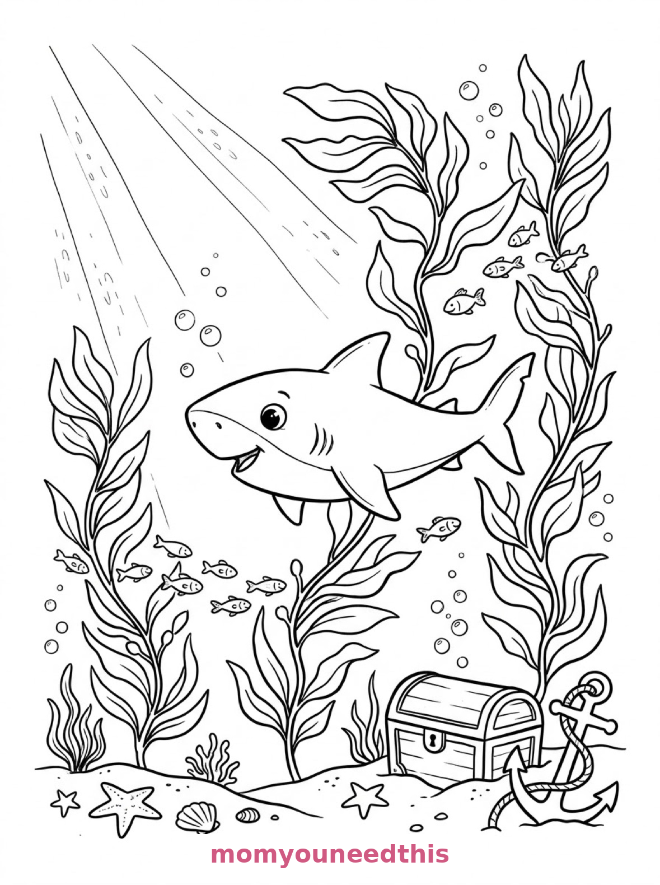
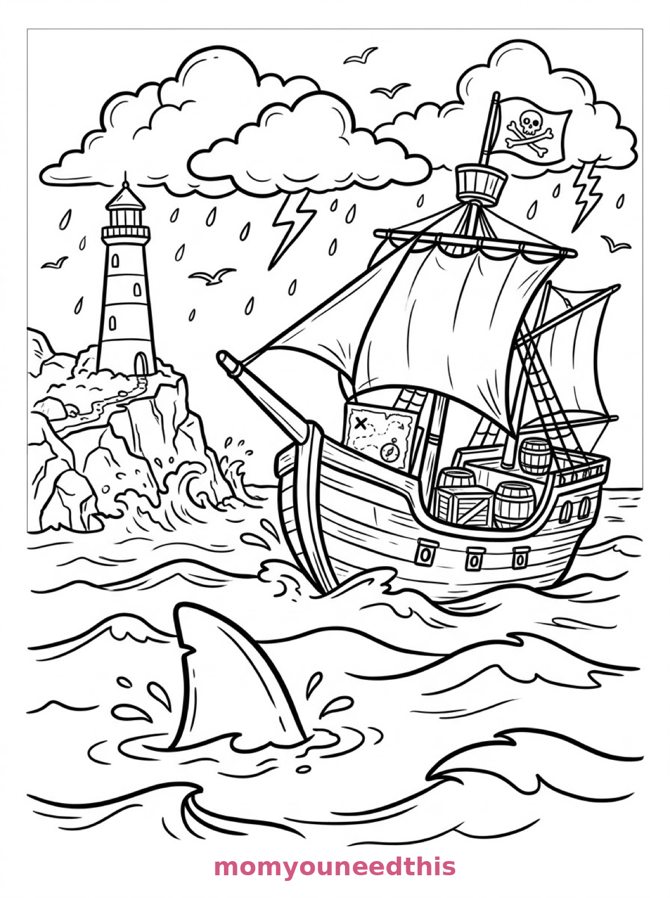
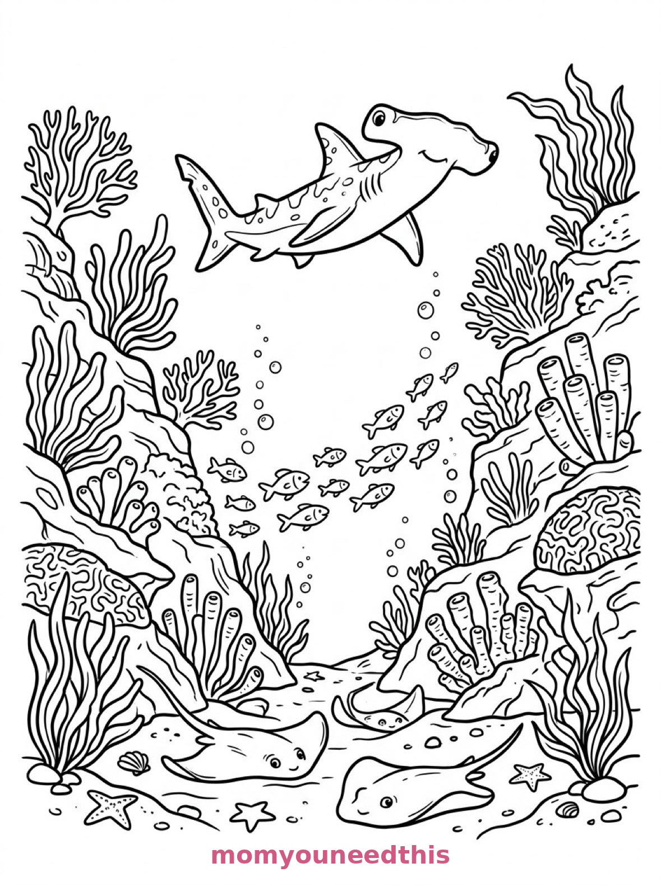

Free Shark Coloring Pages Kelp Forest, Pirate Ship & Coral Canyon Printables
These free shark coloring pages swim from a sunlit kelp forest to a pirate ship's shadow to a coral canyon — a cruising shark, a famous fin, and a hammerhead with stingrays. Download the set below, print at home on letter-size paper, and let the coloring fun begin. No signup needed.
Last updated: October 23, 2026
Quick Answer
Yes — this page has three free printable shark coloring pages: a shark swimming through a kelp forest past a treasure chest, a shark's fin cutting through waves near a pirate ship, and a hammerhead shark gliding over a coral canyon with stingrays. Bold outlines and big spaces, made for little hands. Download, print on letter-size paper, and hand over the crayons — no signup, no cost.
At a Glance
- Ages: 3–8
- Pages: 3 free printables
- Format: Print at home, letter size
- Cost: Free, no signup
- Supplies: Crayons or markers
- Time: 10–20 minutes
🦈 Shark in the Kelp Forest Coloring Page

🎨 Download Your Free Kelp Forest Shark Coloring Page
A shark swims through a kelp forest above a sandy seabed, with a treasure chest half-buried beside an anchor, small fish weaving between the kelp strands and rays of light angling down — bold outlines, big spaces, zero signup.
⬇️ Download Free Kelp Forest Page 🖨️ Print Kelp Forest Page
🎁 Free printable for preschoolers & kids
🏴☠️ Shark Fin by the Pirate Ship Coloring Page

🎨 Download Your Free Pirate Ship Shark Coloring Page
A shark's fin cuts through the waves near a wooden pirate ship, with barrels and a treasure map crate on deck, a lighthouse on the rocks behind and storm clouds gathering above the sea — bold outlines, big spaces, zero signup.
⬇️ Download Free Pirate Ship Page 🖨️ Print Pirate Ship Page
🎁 Free printable for preschoolers & kids
🔨 Hammerhead Over the Coral Canyon Coloring Page

🎨 Download Your Free Hammerhead Coloring Page
A hammerhead shark glides over a coral canyon where stingrays rest on the sand below, with sea fans, tube sponges and a school of fish streaming past the coral walls — bold outlines, big spaces, zero signup.
⬇️ Download Free Hammerhead Page 🖨️ Print Hammerhead Page
🎁 Free printable for preschoolers & kids
More Coloring Pages
Tap any picture to open its theme page and download the free printable.
🦈 How To Use This Page
- Browse the three designs and pick the shark scene your child will love most.
- Tap download or print under that design — the file opens full-size, ready for letter-size paper.
- Print a couple of copies of the kelp forest — the treasure chest never hides the same way twice.
- Color together with crayons or markers and hum the dramatic music.
🌊 Why Kids Love Shark Coloring Pages
Sharks are the ocean's rock stars — sleek, fast and just a little bit thrilling. These three pages keep all of the thrill and none of the fear: a shark exploring a kelp forest, a famous fin slicing the waves by a pirate ship, and a hammerhead cruising over a coral canyon. Every design is a scene to explore, not a monster to avoid.
Shark shapes are also made for coloring. One long, smooth body in a single bold shade looks instantly impressive, and the scenes around the sharks — kelp, coral, treasure, stingrays — give patient colorers plenty to build after the star is done. The star, meanwhile, is in no hurry at all — sharks have been patient for a very long time.
🦈 Meet the Three Shark Scenes on This Page
The kelp forest shark. A shark swims through a kelp forest above a sandy seabed, with a treasure chest half-buried beside an anchor, small fish weaving between the kelp strands and rays of light angling down through the water. It is the sunniest page in the set — a shark in its garden.
The fin by the pirate ship. A shark's fin cuts through the waves near a wooden pirate ship, with barrels and a treasure map crate on deck, a lighthouse on the rocks behind and storm clouds gathering above the sea. Only the fin shows — which makes this the most dramatic page in the set. Kids love deciding how big the shark under the water must be.
The hammerhead canyon. A hammerhead shark glides over a coral canyon where stingrays rest on the sand below, with sea fans, tube sponges and a school of fish streaming past the coral walls. It is the fullest page in the set and the one for coral-color fans: the canyon walls are a reef rainbow waiting to happen.
✏️ Shark Coloring Tips
- Gray is classic, blue is bold. Real sharks are gray or blue-gray on top and white below — try that two-tone finish, then print a second copy and invent a rainbow shark.
- Color the fin page's water in two moods. Calm turquoise or stormy gray-green — the clouds on the page work with either.
- Make the coral the rainbow. On the canyon page, the shark stays cool gray-blue while the coral walls carry every bright color you own.
- Let the light rays stay pale. On the kelp page, the rays of light read best left white or the palest yellow against colored water.
🦈 Coloring Pages for Different Ages
For ages 3 to 4, start with the kelp forest. The shark is one big smooth shape, the kelp is chunky, and the treasure chest is a fun box to fill with gold.
For ages 5 to 6, the pirate ship fin is the sweet spot. The waves, the ship and the lighthouse are bold shapes, and the hidden-shark idea keeps kids grinning through the whole page.
For ages 7 to 8, hand over the hammerhead canyon. The coral, the sponges, the stingrays and the fish school reward slow, detailed coloring — a genuine project page.
🏴☠️ More Shark Fun After Coloring
Play “how big is the shark?” with the fin page: measure your child's hand against the fin, then stretch a string across the floor to the size the whole shark would be if the fin is that big. Coloring page, measuring game, ocean lesson — one sheet.
For the rest of the reef, visit the ocean animals coloring pages — turtles, octopus, dolphins and a giant squid. And the gentler residents live on the dolphin coloring pages.
🔗 More Free Printables You’ll Love
- Free Ocean Animals Coloring Pages A reef turtle, a dolphin and whale, and a giant squid to color.
- Free Sea Creatures Coloring Pages An octopus arch, a mermaid's garden and a tide pool to color.
- Free Dolphin Coloring Pages Leaping dolphins, a mother and calf, and a beach-ball trick.
- All Free Coloring Pages Browse every free coloring page on the site, organized by theme.
❓ Shark Coloring Pages FAQ
Are these shark coloring pages really free?
Yes — all three designs on this page are free original printables from MomYouNeedThis. Download them, print them at home, and color — no signup and no cost.
What ages are these coloring pages best for?
Kids ages 3 to 8 get the most from this set. The kelp forest is the gentlest start for younger children, while the pirate ship and coral canyon scenes have the detail older kids enjoy.
How do I print a coloring page?
Tap the download button under the design you want, then print the file on regular letter-size paper. The print button opens the full-size page in a new tab if you prefer to print from there.
Are these sharks too scary for little kids?
No — these are storybook sharks in exploring mode: one in a kelp forest, one showing just a fin by a pirate ship, and a hammerhead over a coral canyon. There is nothing frightening on any of the three pages.
Can I make a shark coloring book from these pages?
Yes — print all three designs, stack them in order, and staple along the left edge. Add a cover sheet with your child's name for a finished homemade shark coloring book.